Комп'ютерна безпека — це сукупність методів захисту у галузі телекомунікацій та інформатики, пов'язаних з оцінкою і контролюванням ризиків, що виникають при користуванні комп'ютерами та комп'ютерними мережами і їх впровадження з точки зору конфіденційності, цілісності і доступності.
Закон України «Про основні засади забезпечення кібербезпеки України» дає таке визначення: «Кібербезпека — захищеність життєво важливих інтересів людини і громадянина, суспільства та держави під час використання кіберпростору, за якої забезпечуються сталий розвиток інформаційного суспільства та цифрового комунікативного середовища, своєчасне виявлення, запобігання і нейтралізація реальних і потенційних загроз національній безпеці України у кіберпросторі».
Створення безпечних комп'ютерних систем і додатків
є метою діяльності мережевих інженерів і програмістів,
а також предметом теоретичного дослідження як у галузі телекомунікацій та інформатики, так і економіки. У зв'язку із складністю і трудомісткістю більшості процесів і методів захисту цифрового обладнання, інформації та комп'ютерних систем від ненавмисного чи несанкціонованого доступу вразливості комп'ютерних систем становлять значну проблему для їхніх користувачів.
Кібербезпека — це безпека ІТ систем (обладнання та програм). Кібербезпека є частиною інформаційної безпеки будь-якої організації.
Кіберполіція й інші правоохоронні органи здійснюють розслідування, тоді як Урядова команда реагування на кіберінциденти (CERT-UA), Ситуаційний центр забезпечення кібербезпеки при СБУ (MISP-UA) та Національний координаційний центр кібербезпеки (НКЦК) при РНБО мають нейтралізувати загрозу в її активній фазі. Навіть приватні підприємства можуть звертатися до CERT-UA за оперативною підтримкою. Держателі державних інформаційних ресурсів також інформують про інциденти Державну службу спеціального зв'язку та захисту інформації (ДССЗЗІ).
Попри все, рівень захищеності кіберпростору України залишається незадовільним. На думку експертів, українські системи залишаються вразливими до хакерських атак. Цьому сприяє недостатня компетентність спеціалістів, що працюють на державній службі. Зі сторони бізнесу причина вразливості полягає в необізнаності та неусвідомленості загрози. В Україні наразі не існує централізованого управління силами реагування на кіберзлочини.
Захист комп'ютера
Існує багато шляхів захисту комп'ютерів, серед них методи, що ґрунтуються на використанні безпечних операційних систем та апаратного забезпечення, здатного захистити комп'ютерну систему.
Превентивні методи захисту
Згідно зі слів експертів з кібербезпеки можна виділити такі методи захисту:
- безпечна побудова серверної частини
- здійснювати регулярне оновлення всіх елементів інфраструктури
- робити тестування навантаження
- проводити аналіз коду використовуваних бібліотек
- проводити аналіз коду програми
- ідентифікувати вразливості шляхом сканування
- проводити регулярний аудит інформаційної безпеки
Протягом року кількість значущих кібератак на критичні об'єкти в Європі подвоїлася. Про це з посиланням на Агентство Європейського Союзу з кібербезпеки (ENISA) пише CNN.
За 2020 рік було здійснено 304 значущі шкідливі атаки на "критичні сектори", в той час як у 2019 їх було 146. Агенція повідомила також про зростання на 46% нападів на лікарні і мережі охорони здоров'я.
Статистика свідчить про наростання глобального впливу кібератак, часто у формі програм-вимагачів.
"Вони вражають компанії і розуміють, яку саме компанію вони вразили, і намагаються проникнути якомого повніше, щоб потім змогти витягти щонайбільше грошей", - зазначив старший радник з питань безпеки компаній Джон Шієр.

СТАТИСТИКА КІБЕРАТАК НА 2020-2021 рр

Розвиток кіберзахисту – невід'ємна складова цифровізації України
Про це заявив Віце-прем'єр – Міністр цифрової трансформації України Михайло Федоров під час відкриття круглого столу з питань реформування сфери кібербезпеки. Круглий стіл зібрав представників державних органів та міжнародних організацій для обговорення нагальних змін, яких потребує українська кіберсфера.
“Прийнято закон про електронні комунікації, який вже наступного року має вступити в дію. Також зареєстрований законопроєкт про критичну інфраструктуру та триває робота над законопроєктом про регулятора, про кібербезпеку, про хмари та багато іншого”.
Під час круглого столу представники проєкту USAID “Кібербезпека критично важливої інфраструктури України” представили Дорожню карту реформ з національної готовності до кіберзахисту критичної інфраструктури. Дорожня карта це чітке довгострокове бачення змін та пріоритетних реформ, що мають якісно поліпшити кібербезпеку об'єктів критичної інфраструктури та допомогти всім зацікавленим суб’єктам визначити власні кроки на цьому шляху.
Підсумовуючи результати круглого столу “Забезпечення реформування сфери кібербезпеки: стратегічні пріоритети”, очільник проєкту USAID “Кібербезпека критично важливої інфраструктури України” Тімоті Дубель підтвердив готовність проєкту надати всю необхідну допомогу Комітету у підготовці потрібних законів, особливо таких базових як про кібербезпеку, захист критичної інфраструктури, імплементації європейського законодавства.
 



 
